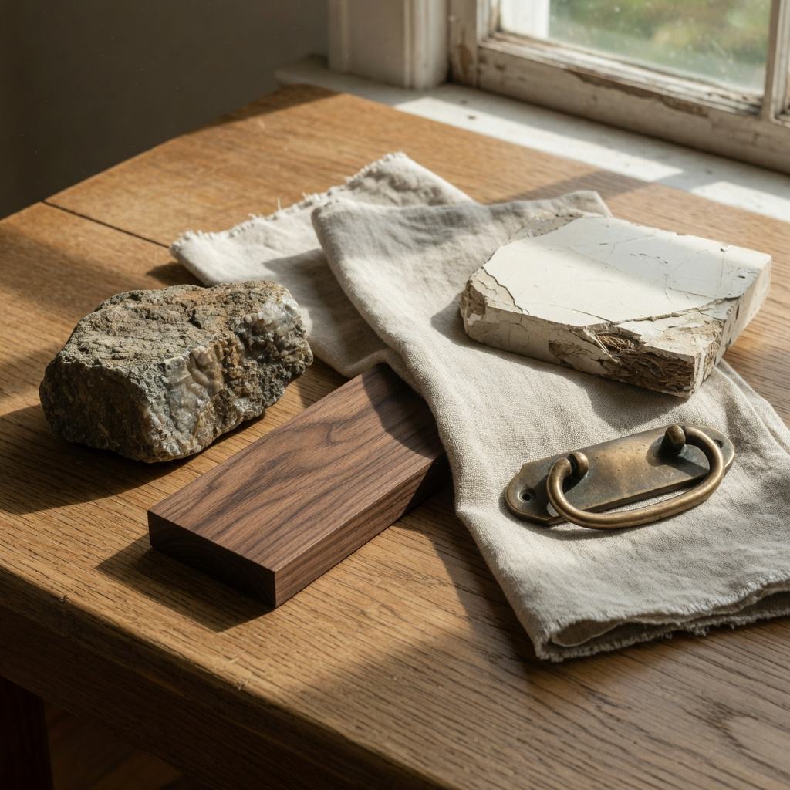

The land
We walk it. We study grade, hydrology, canopy, rock, access, and the view that should not be accidental. If the lot cannot carry the house you want, we will say so before anyone draws.
Approach
Custom residential work on this terrain fails in the gaps — between architect and builder, between budget and drawing, between what was promised and what was built. We close those gaps on purpose.
We walk it. We study grade, hydrology, canopy, rock, access, and the view that should not be accidental. If the lot cannot carry the house you want, we will say so before anyone draws.
We collaborate with your architect, or help you choose one. Cost is in the room from the first scheme. Allowances are named. The house is edited until it belongs to the site and to the life that will be lived in it.
A small roster of trades. Local stone where the land offers it. Timber, plaster, metal, and glass assembled for this climate. Corey remains the point of contact — not a new project manager each quarter.
A documented house. A walk that is not a formality. And a studio that still answers after the last punch list is signed.

Scope
Custom residences — new houses designed for a specific piece of land, typically in the luxury and high-craft range.
Significant renovations — when the existing structure is worth keeping and the work is architectural, not cosmetic.
Design collaboration — we are builders first. We work with architects and interior designers as peers, and we will help assemble that table when a client arrives with land and a feeling rather than a set of drawings.
We do not bid production work, and we do not chase every inquiry. A good fit is a better beginning than a full calendar.
For the client
You will know who is responsible. You will know what things cost. You will not be asked to love a surprise.
Most of the anxiety in custom building is not about tile samples. It is about silence. We structure the work so that decisions arrive in order, in writing, and with enough time to make them well.
If a project is not right for the studio — wrong site, wrong timing, wrong ambition — we will decline it. That is part of the standard.
Materials
Fieldstone and stacked masonry. Walnut and white oak. Lime plaster. Standing-seam metal. Bronze and unlacquered brass. Steel windows that frame the ridge rather than fight it.
We specify what will still look composed in ten years, not what photographs well in week one.